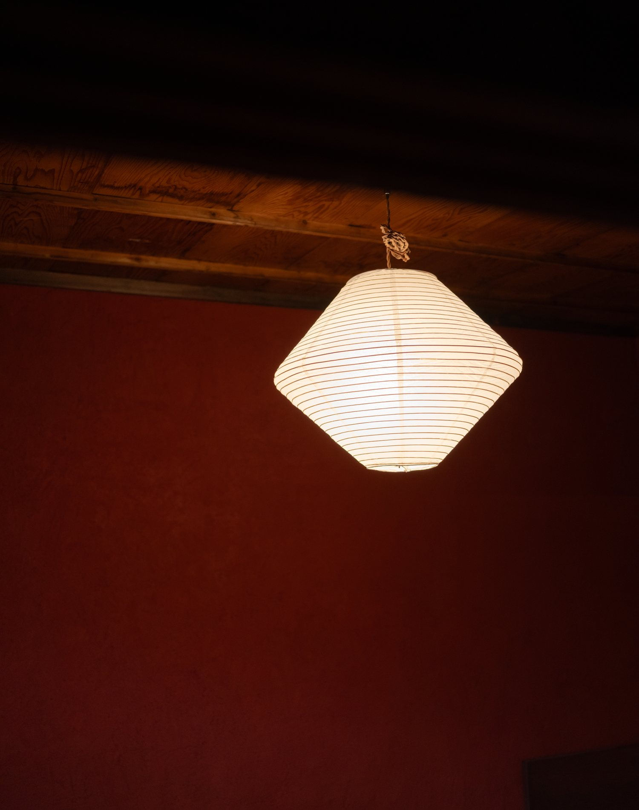
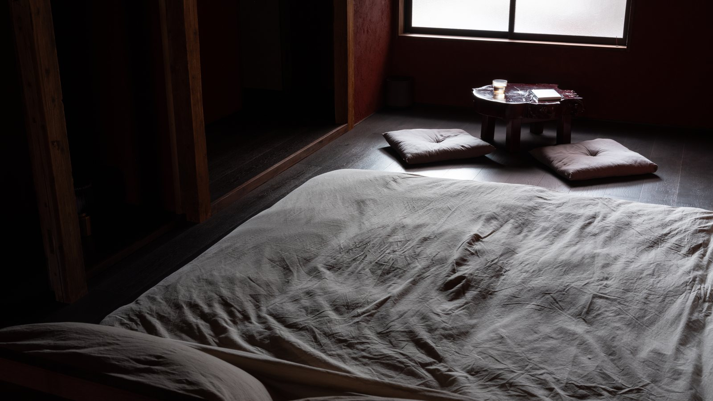
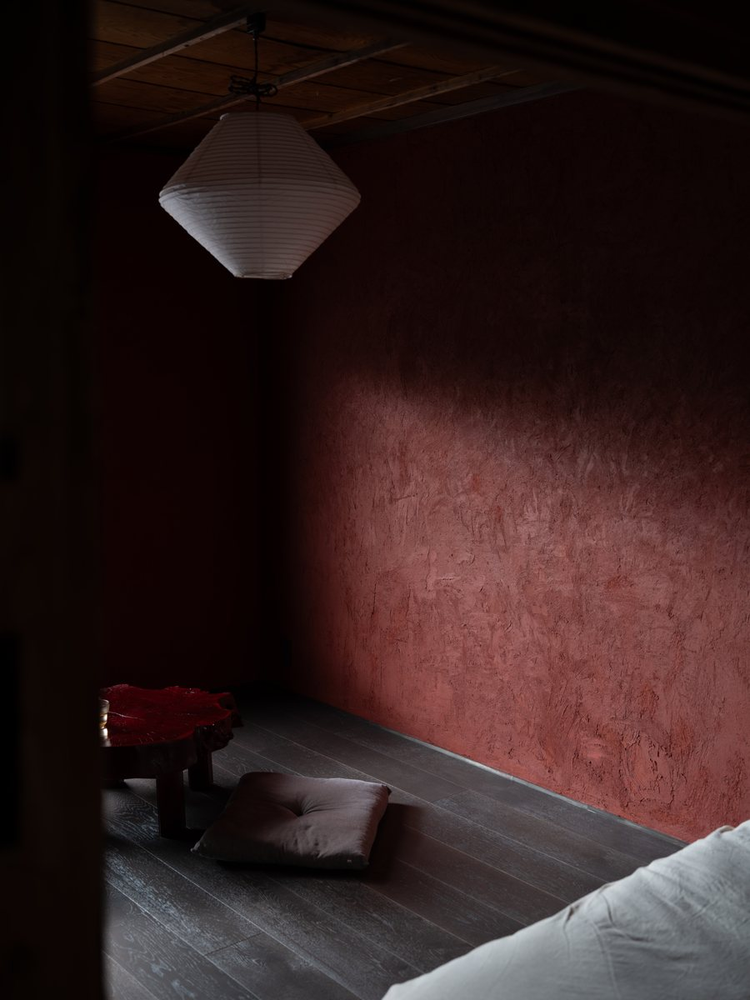
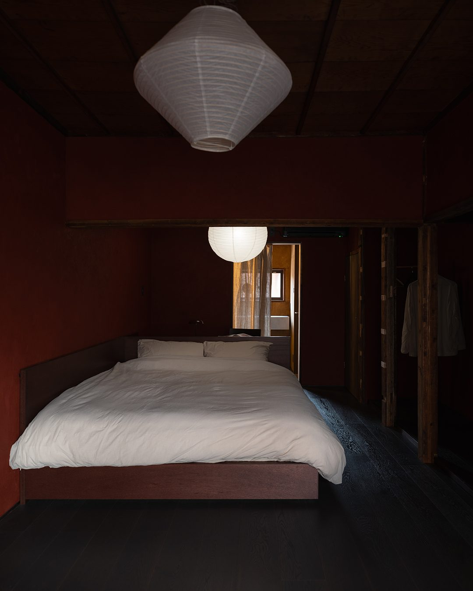
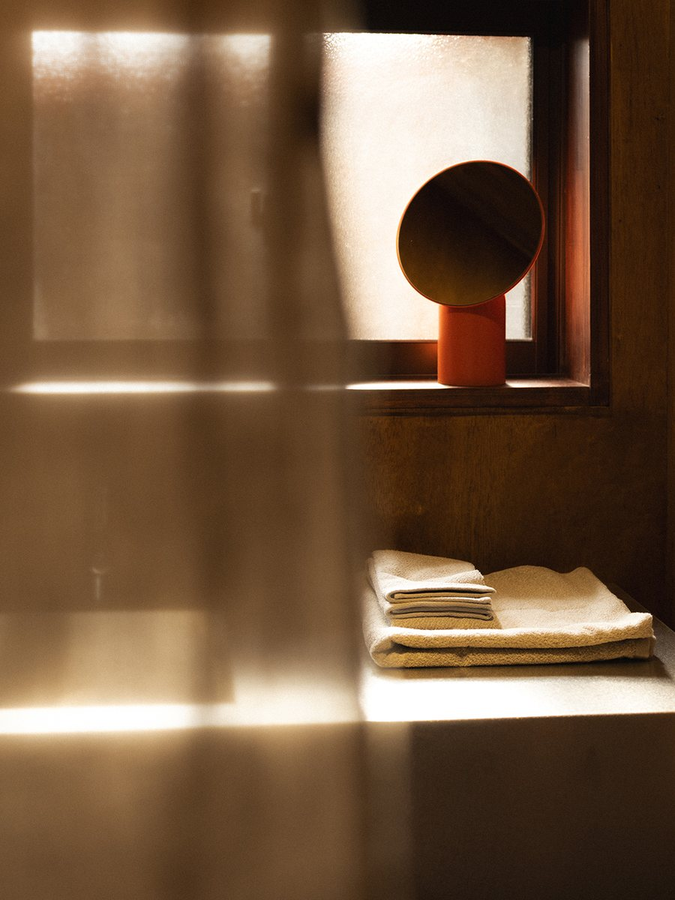

About the stay
刷々 sassa は、大阪・放出のレトロな商店街に残る木造長屋の一室を改修した、一日一組の小さな宿です。古い建物の趣をできるだけ残しながら、土壁や木などの自然素材を活かして改修しました。どこか懐かしさを感じる深い赤色の土壁が、空間を静かに包みます。
Sassa is a small, one-room guesthouse in Hanaten, Osaka, created by renovating a room within a traditional wooden row house in a retro shopping street.The renovation preserves as much of the building's original character as possible, making use of natural materials such as earthen walls and wood. Deep red earthen walls, carrying a quiet sense of nostalgia, gently embrace the space.

静かな滞在 — a quiet stay
Room Details



ご予約前にご確認ください / Before booking
客室は2階にあり、お部屋へのアクセスは急な階段のみとなります。古い長屋の構造を活かしているため、階段の勾配は一般的なホテルやマンションより急です。大きなスーツケースをお持ちの方や、足腰に不安のある方はご注意ください。
The room is on the 2nd floor, accessible only by a steep staircase. Please take care if you have a large suitcase or difficulty with stairs.
古い建物のため、急な階段や低い位置の窓があります。小さなお子様向けの安全設備は設けておりませんので、ご予約前にご確認ください。
Being an old building, there are steep stairs and low windows. No childproofing is provided, so please consider this before booking.
Book your stay via Airbnb.
Airbnbで予約する ↗ メールで問い合わせ ↗